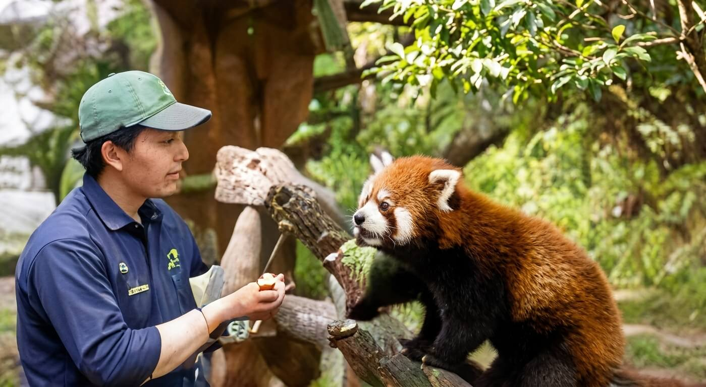
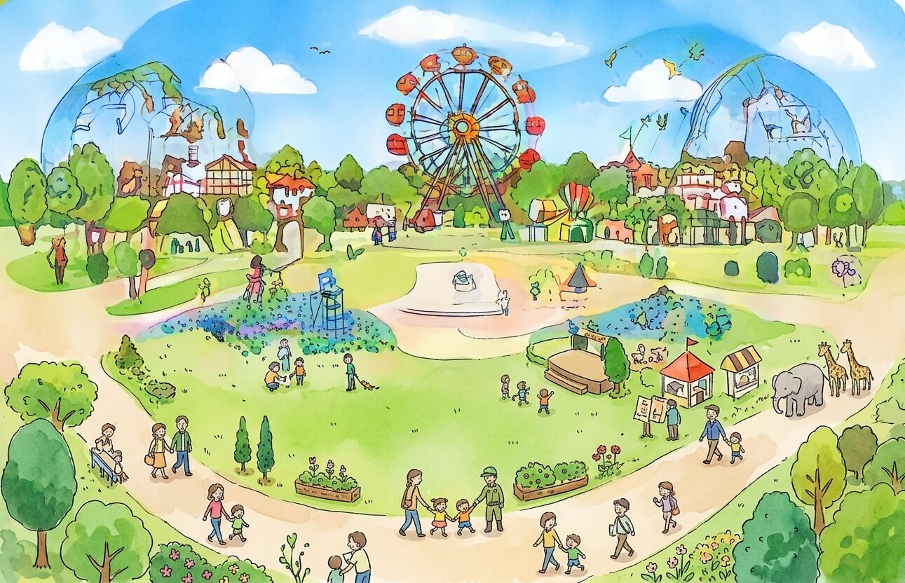

飼育員の視点
「足あと・食べあと・寝床」を探してみよう
じっとしているように見えても、よく見ると枝をかじった跡やふかふかの寝床づくりなど、暮らしの工夫がいっぱい。掲示板の「飼育員メモ」もぜひチェック！
ちょっとした視点のヒントで、いつものお散歩がもっと特別な探検に変わります。
120% ZOO GUIDE
「ただ見る」から「気づいて、つながる」へ。
観察のポイントやおすすめコース、園内アトラクションの活用法をまとめました。

じっとしているように見えても、よく見ると枝をかじった跡やふかふかの寝床づくりなど、暮らしの工夫がいっぱい。掲示板の「飼育員メモ」もぜひチェック！

人気のエサやり体験やふれあいプログラムは、時間や定員が決まっています。入園したらまず本日のタイムスケジュールを確認して、無理のない順番で回るのがコツです。

たっぷり歩いたあとは、観覧車やメリーゴーランドなどの遊園地エリアや木陰のベンチでひと休み。子どもも大人も最後まで笑顔で過ごせます。
朝一番の活発な動き、お昼のまったりタイム、夕暮れや夜間開園の雰囲気など、訪れる時間によって見せる表情はさまざま。季節ごとの再訪もおすすめです。
※天候・動物の体調により変更になる場合があります。


飼育員の解説つきで、おやつを食べる姿を観察できます。
夏休み期間の金・土曜は20:30まで。夜行性動物の活発な姿に会えます。